3 Classificação e Árvores de Decisão

3.1 Introdução
É de grande interesse, em muitas situações, conseguir classificar antecipadamente o tipo de problema apresentado por um paciente com base nos sintomas relatados e tomar medidas para combater determinada doença em seu estágio inicial. Em muitos casos reais isso tem sido possível graças à análise minuciosa de Bases de Dados contendo anotações médicas de outros pacientes com soluções bem sucedidas previamente documentadas.
Em instituições financeiras, para um gerente de banco nem sempre é algo simples fazer uma avaliação de risco sobre a concessão de empréstimos de alto valor. Com base em dados de transações anteriores e nas características específicas de cada cliente, quase sempre é possível extrair automaticamente informações não óbvias que ajudam a classificar um correntista como bom ou mau pagador.
Estes são apenas alguns casos em que se verifica que há sempre informações úteis e não evidentes em grandes Bases de Dados. Estas informações podem ser automaticamente extraídas com Mineração de Dados e interpretadas de modo a constituir conhecimento especializado e útil para a tomada de decisão. A representação do conhecimento através de Árvores de Decisão vai ser o tema deste capítulo.
3.2 Classificação
Classificação é uma forma de modelagem preditiva, isto é, com base nos atributos de entrada de um objeto é possível predizer o atributo de saída desse objeto. Na prática, os Exemplos de uma Base de Dados estão previamente rotulados em duas ou mais classes para serem utilizados num processo de treinamento, cujo fim é criar uma estrutura de representação do conhecimento contido nessa Base de Dados.
Quando se fala em Exemplos previamente rotulados geralmente se subentende que eles serão usados em Aprendizado Supervisionado de Máquina. Os rótulos ou classes dos Exemplos orientam o processo de treinamento, ao final do qual se obtém um Modelo que sintetiza todo o conhecimento contido nas variáveis ou nos atributos. Este Modelo pode então ser usado para prever o valor da variável alvo ou do atributo de saída de novos Exemplos desconhecidos.
O objetivo então da Classificação é predizer em que classe um novo Exemplo, não pertencente ao Conjunto de Treinamento, deve ser colocado. Para que esta tarefa possa ser adequadamente desempenhada é necessário extrair da Base de Dados uma estrutura de conhecimento, tal como Árvores de Decisão ou Regras de Classificação.
Em outras palavras, o Modelo induzido por inferência é equivalente a uma função que mapeia valores de entrada, geralmente denominados variáveis independentes ou explicativas, a um único valor de saída, geralmente denominado variável dependente ou alvo. Na Classificação, a variável de saída, via de regra, é discreta (ou categórica), enquanto que na Regressão a variável de saída é contínua.
A Figura 3.1 ilustra simplificadamente um estudo clássico introduzido por (Fisher (1936)), cujo artigo original apresenta três conjuntos com 50 amostras (ou Exemplos), totalizando 150 medidas do comprimento e da largura de uma pequena flor conhecida como Flor de Lis ou Íris. De acordo com os atributos de entrada “Comprimento” e “Largura” da pétala, cada Exemplo dessa flor pode ser classificado em uma das três classes: Setosa, Versicolor ou Virgínica.
As linhas tracejadas no gráfico ajudam a entender por que a classificação da Íris do tipo Setosa pode ser mais simples que a dos tipos Versicolor e Virgínica. Como a Íris do tipo Setosa apresenta largura e comprimento da pétala bem menor que as outras duas, basta considerar apenas um dos atributos, digamos Comprimento \(< 2,5\) cm, para poder classificá-la corretamente. No caso dos tipos Versicolor e Virgínica, tanto o atributo Comprimento quanto Largura se sobrepõem em algumas regiões do gráfico e, portanto, poderá haver erro associado à classificação destes tipos de Íris.
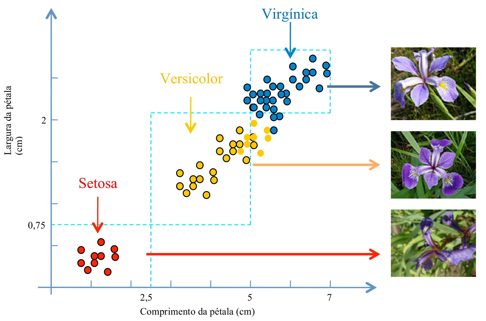
1 Fonte: Wikimedia Commons - Iris virginica (Acessado em 03.03.26).
{kind=link}
2 Fonte: Wikimedia Commons - Iris versicolor (Acessado em 03.03.26).
{kind=link}
3 Fonte: Wikimedia Commons - Iris setosa (Acessado em 03.03.26).
{kind=link}
Em muitas aplicações práticas é perfeitamente aceitável a utilização de algoritmos relativamente simples que produzam um modelo claro de representação do conhecimento, mesmo que isso implique uma certa taxa de erro na classificação. Modelos facilmente compreensíveis de representação de conhecimento, como Árvores de Decisão e Regras de Classificação, permitem que um especialista avalie o modelo e detecte problemas em sua estrutura. Tanto para o médico quanto para o gerente de banco que se utilizam de um modelo de classificação para auxiliar em sua decisão, é importante que eles consigam interpretar todos os passos lógicos utilizados pelo sistema para chegar àquela classificação e avaliá-los à luz da respectiva experiência profissional.
Por outro lado, em muitas aplicações o mais importante é otimizar a taxa de acerto ou a precisão do modelo, mesmo que isso implique certa perda de clareza, de simplicidade ou de desempenho do modelo. Redes Neurais e Máquinas de Vetor de Suporte são duas ilustrações de técnicas que podem oferecer alta precisão, mas que utilizam modelos de classificação difíceis de entender. É comum o uso dessas duas técnicas na área de aplicações financeiras, porque investidores geralmente estão mais interessados no ganho obtido diariamente na aplicação mais bem classificada do que no modelo matemático explicativo. Por esta razão, a decisão de usar um modelo orientado ao conhecimento ou um modelo tipo caixa-preta deve ser feita caso a caso.
Para a tarefa de Classificação, os dois modelos orientados ao conhecimento mais comuns de representação são Árvores de Decisão e Regras de Classificação. Ambos são logicamente equivalentes e permitem que a partir de uma Árvore de Decisão seja possível obter as correspondentes Regras de Classificação, e vice-versa, embora a obtenção de Árvores a partir de Regras seja um processo mais complexo. Há, porém, vantagens e desvantagens observadas durante a geração desses modelos, que serão discutidas mais a frente.
A Figura 3.2 apresenta modelos simplificados de uma Árvore de Decisão e das correspondentes Regras de Classificação para o caso da flor Íris. Com estes modelos simplificados, os erros de classificação ilustrados na Figura 3.1 novamente se repetiriam aqui. Para reduzir a taxa de erros, veremos que será necessário usar métodos de aprendizado mais refinados ou complexos.
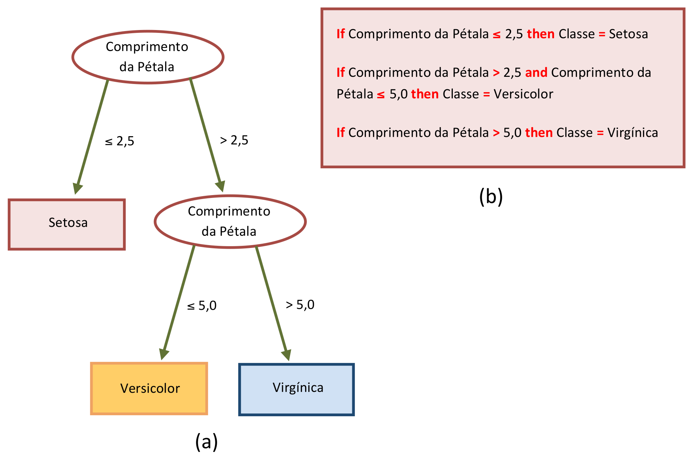
Dependendo da representação desejada, diferentes métodos de inferência serão usados sobre os dados. Mesmo que um modelo faça classificação com erros, é importante observar que cada Exemplo sempre pertencerá a uma única classe.
3.3 Árvores de Decisão
Numa Árvore de Decisão cada atributo é representado por um nó de decisão, cuja função é testar o valor desse atributo. Uma classe é representada por um nó folha, que reúne todos os Exemplos que chegarem a ele depois de satisfazerem os testes dos nós de decisão intermediários. Portanto, numa Árvore de Decisão, a classificação de um Exemplo desconhecido implica percorrer toda a árvore a partir de um nó raiz, testando atributos em sucessivos nós internos até chegar a um nó folha, que lhe atribuirá uma classe. O objetivo de uma Árvore de Decisão é retornar uma classe para um Exemplo desconhecido.
3.4 Indução de Árvores de Decisão
Uma Árvore de Decisão pode ser construída de forma recursiva, dividindo sucessivamente o conjunto de atributos em subconjuntos. Primeiramente escolhemos um elemento do conjunto de atributos para ser o nó raiz e adicionamos uma aresta para cada um dos possíveis valores que este atributo pode assumir. A seguir, repetimos o processo em cada uma das arestas com os atributos restantes até que todos os Exemplos considerados pertençam à mesma classe.
Gerar uma Árvore de Decisão com escolha aleatória dos atributos não é difícil, porém dependendo da ordem dos atributos, diferentes árvores serão geradas. Isso significa que uma mesma Base de Dados pode produzir muitas Árvores de Decisão funcionalmente equivalentes, mas com tamanhos distintos. Como estamos interessados nos modelos mais compactos, é interessante encontrar critérios que ajudem a decidir sobre a ordem em que os atributos devem aparecer na Árvore de Decisão.
Para ilustrar esta questão, vamos utilizar como caso de estudo novamente a clássica Tabela do Tempo (Tabela 3.1), introduzida por (Quinlan, 1986), tendo como atributos de entrada “Dia”, “Temperatura”, “Umidade” e "Vento”, e como atributo de saída (ou classe) “Partida”. Para ser mais preciso, na realidade temos duas classes “Sim” e “Não”, e queremos construir uma Árvore de Decisão que represente de forma compacta os Exemplos contidos nessa tabela. A seguir, com a Árvore de Decisão obtida, dado um novo Exemplo, vamos tentar predizer se vai ou não haver “Partida” num determinado dia, sendo a resposta a combinação linear dos atributos de entrada.
| Dia | Temperatura | Umidade | Vento | Partida |
|---|---|---|---|---|
| Ensolarado | Elevada | Alta | Falso | \(\textcolor{blue}{\textbf{Não}}\) |
| Ensolarado | Elevada | Alta | Verdadeiro | \(\textcolor{blue}{\textbf{Não}}\) |
| Nublado | Elevada | Alta | Falso | \(\textcolor{red}{\textbf{Sim}}\) |
| Chuvoso | Amena | Alta | Falso | \(\textcolor{red}{\textbf{Sim}}\) |
| Chuvoso | Baixa | Normal | Falso | \(\textcolor{red}{\textbf{Sim}}\) |
| Chuvoso | Baixa | Normal | Verdadeiro | \(\textcolor{blue}{\textbf{Não}}\) |
| Nublado | Baixa | Normal | Verdadeiro | \(\textcolor{red}{\textbf{Sim}}\) |
| Ensolarado | Amena | Alta | Falso | \(\textcolor{blue}{\textbf{Não}}\) |
| Ensolarado | Baixa | Normal | Falso | \(\textcolor{red}{\textbf{Sim}}\) |
| Chuvoso | Amena | Normal | Falso | \(\textcolor{red}{\textbf{Sim}}\) |
| Ensolarado | Amena | Normal | Verdadeiro | \(\textcolor{red}{\textbf{Sim}}\) |
| Nublado | Amena | Alta | Verdadeiro | \(\textcolor{red}{\textbf{Sim}}\) |
| Nublado | Elevada | Normal | Falso | \(\textcolor{red}{\textbf{Sim}}\) |
| Chuvoso | Amena | Alta | Verdadeiro | \(\textcolor{blue}{\textbf{Não}}\) |
Inicialmente vamos considerar separadamente para o nó raiz cada um dos quatro atributos possíveis e ver como o atributo de saída “Partida” se divide em “Sim” e “Não”. Na Tabela 3.2 é ressaltado o atributo “Dia”, na Tabela 3.3, “Temperatura”, na Tabela 3.4, “Umidade”, e na Tabela 3.5, “Vento”.
Como estamos interessados em construir uma árvore compacta, dentre os quatro atributos candidatos para nó raiz, o atributo “Dia” parece o mais promissor porque dentre as três arestas que teremos de colocar neste nó (“Ensolarado”, “Nublado” e “Chuvoso”), a aresta para “Nublado” tem todos seus elementos pertencentes à mesma classe “Sim” e, portanto, esta aresta da Árvore de Decisão termina aqui com um nó folha “Sim”.
| Dia | Partida |
|---|---|
| Ensolarado | \(\textcolor{red}{\textbf{Sim}}\) |
| Ensolarado | \(\textcolor{red}{\textbf{Sim}}\) |
| Ensolarado | \(\textcolor{blue}{\textbf{Não}}\) |
| Ensolarado | \(\textcolor{blue}{\textbf{Não}}\) |
| Ensolarado | \(\textcolor{blue}{\textbf{Não}}\) |
| \(\textcolor{green}{\textbf{Nublado}}\) | \(\textcolor{green}{\textbf{Sim}}\) |
| \(\textcolor{green}{\textbf{Nublado}}\) | \(\textcolor{green}{\textbf{Sim}}\) |
| \(\textcolor{green}{\textbf{Nublado}}\) | \(\textcolor{green}{\textbf{Sim}}\) |
| \(\textcolor{green}{\textbf{Nublado}}\) | \(\textcolor{green}{\textbf{Sim}}\) |
| Chuvoso | \(\textcolor{red}{\textbf{Sim}}\) |
| Chuvoso | \(\textcolor{red}{\textbf{Sim}}\) |
| Chuvoso | \(\textcolor{red}{\textbf{Sim}}\) |
| Chuvoso | \(\textcolor{blue}{\textbf{Não}}\) |
| Chuvoso | \(\textcolor{blue}{\textbf{Não}}\) |
| Temperatura | Partida |
|---|---|
| Elevada | \(\textcolor{red}{\textbf{Sim}}\) |
| Elevada | \(\textcolor{red}{\textbf{Sim}}\) |
| Elevada | \(\textcolor{blue}{\textbf{Não}}\) |
| Elevada | \(\textcolor{blue}{\textbf{Não}}\) |
| Amena | \(\textcolor{red}{\textbf{Sim}}\) |
| Amena | \(\textcolor{red}{\textbf{Sim}}\) |
| Amena | \(\textcolor{red}{\textbf{Sim}}\) |
| Amena | \(\textcolor{red}{\textbf{Sim}}\) |
| Amena | \(\textcolor{blue}{\textbf{Não}}\) |
| Amena | \(\textcolor{blue}{\textbf{Não}}\) |
| Baixa | \(\textcolor{red}{\textbf{Sim}}\) |
| Baixa | \(\textcolor{red}{\textbf{Sim}}\) |
| Baixa | \(\textcolor{red}{\textbf{Sim}}\) |
| Baixa | \(\textcolor{blue}{\textbf{Não}}\) |
| Umidade | Partida |
|---|---|
| Alta | \(\textcolor{red}{\textbf{Sim}}\) |
| Alta | \(\textcolor{red}{\textbf{Sim}}\) |
| Alta | \(\textcolor{red}{\textbf{Sim}}\) |
| Alta | \(\textcolor{blue}{\textbf{Não}}\) |
| Alta | \(\textcolor{blue}{\textbf{Não}}\) |
| Alta | \(\textcolor{blue}{\textbf{Não}}\) |
| Alta | \(\textcolor{blue}{\textbf{Não}}\) |
| Normal | \(\textcolor{red}{\textbf{Sim}}\) |
| Normal | \(\textcolor{red}{\textbf{Sim}}\) |
| Normal | \(\textcolor{red}{\textbf{Sim}}\) |
| Normal | \(\textcolor{red}{\textbf{Sim}}\) |
| Normal | \(\textcolor{red}{\textbf{Sim}}\) |
| Normal | \(\textcolor{red}{\textbf{Sim}}\) |
| Normal | \(\textcolor{blue}{\textbf{Não}}\) |
| Vento | Partida |
|---|---|
| Falso | \(\textcolor{red}{\textbf{Sim}}\) |
| Falso | \(\textcolor{red}{\textbf{Sim}}\) |
| Falso | \(\textcolor{red}{\textbf{Sim}}\) |
| Falso | \(\textcolor{red}{\textbf{Sim}}\) |
| Falso | \(\textcolor{red}{\textbf{Sim}}\) |
| Falso | \(\textcolor{red}{\textbf{Sim}}\) |
| Falso | \(\textcolor{blue}{\textbf{Não}}\) |
| Falso | \(\textcolor{blue}{\textbf{Não}}\) |
| Verdadeiro | \(\textcolor{red}{\textbf{Sim}}\) |
| Verdadeiro | \(\textcolor{red}{\textbf{Sim}}\) |
| Verdadeiro | \(\textcolor{red}{\textbf{Sim}}\) |
| Verdadeiro | \(\textcolor{blue}{\textbf{Não}}\) |
| Verdadeiro | \(\textcolor{blue}{\textbf{Não}}\) |
| Verdadeiro | \(\textcolor{blue}{\textbf{Não}}\) |
A Figura 3.3 ilustra esta primeira iteração na construção de uma Árvore de Decisão compacta.
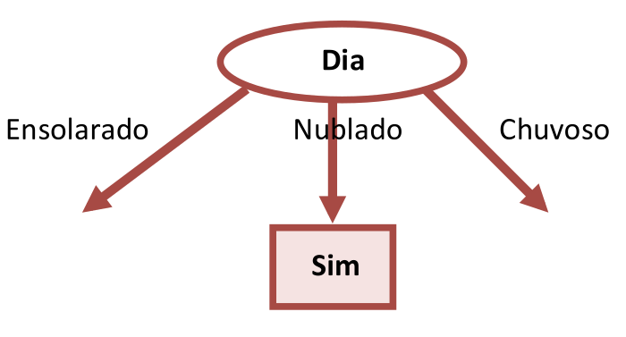
Como nas arestas “Ensolarado” e “Chuvoso” há elementos tanto da classe “Sim” como da classe “Não” (veja Tabela 3.2), outro atributo deve ser escolhido para cada aresta, e assim sucessivamente até que todos os elementos de um ramo pertençam a uma mesma classe. Como restam os atributos “Temperatura”, “Umidade” e “Vento”, analisando a Tabela 3.1, vamos testar cada um deles em combinação com a aresta “Ensolarado”.
As Tabelas 3.6, 3.7 e 3.8 mostram as combinações possíveis de “Dia=Ensolarado” com “Temperatura”, “Umidade” e “Vento”. Aqui também percebemos que “Umidade” parece ser a escolha mais promissora porque todos os elementos de “Umidade=Alta” correspondem à classe “Não” e todos os elementos com “Umidade=Normal” pertencem à classe “Sim”. Portanto, temos mais dois nós folhas aqui, favorecendo a construção de uma árvore mais compacta.
| Dia | Temp. | Partida |
|---|---|---|
| Ensolarado | Elevada | \(\textcolor{blue}{\textbf{Não}}\) |
| Ensolarado | Elevada | \(\textcolor{blue}{\textbf{Não}}\) |
| Ensolarado | Amena | \(\textcolor{red}{\textbf{Sim}}\) |
| Ensolarado | Amena | \(\textcolor{blue}{\textbf{Não}}\) |
| Ensolarado | Baixa | \(\textcolor{red}{\textbf{Sim}}\) |
| Dia | Umidade | Partida |
|---|---|---|
| \(\textcolor{green}{\textbf{Ensolarado}}\) | \(\textcolor{green}{\textbf{Alta}}\) | \(\textcolor{green}{\textbf{Não}}\) |
| \(\textcolor{green}{\textbf{Ensolarado}}\) | \(\textcolor{green}{\textbf{Alta}}\) | \(\textcolor{green}{\textbf{Não}}\) |
| \(\textcolor{green}{\textbf{Ensolarado}}\) | \(\textcolor{green}{\textbf{Alta}}\) | \(\textcolor{green}{\textbf{Não}}\) |
| \(\textcolor{green}{\textbf{Ensolarado}}\) | \(\textcolor{green}{\textbf{Normal}}\) | \(\textcolor{green}{\textbf{Sim}}\) |
| \(\textcolor{green}{\textbf{Ensolarado}}\) | \(\textcolor{green}{\textbf{Normal}}\) | \(\textcolor{green}{\textbf{Sim}}\) |
| Dia | Vento | Partida |
|---|---|---|
| Ensolarado | Falso | \(\textcolor{red}{\textbf{Sim}}\) |
| Ensolarado | Falso | \(\textcolor{blue}{\textbf{Não}}\) |
| Ensolarado | Falso | \(\textcolor{blue}{\textbf{Não}}\) |
| Ensolarado | Verdadeiro | \(\textcolor{red}{\textbf{Sim}}\) |
| Ensolarado | Verdadeiro | \(\textcolor{blue}{\textbf{Não}}\) |
A Figura 3.4 ilustra a segunda iteração do algoritmo com mais dois nós folhas, dando por completa esta região da Árvore de Decisão.
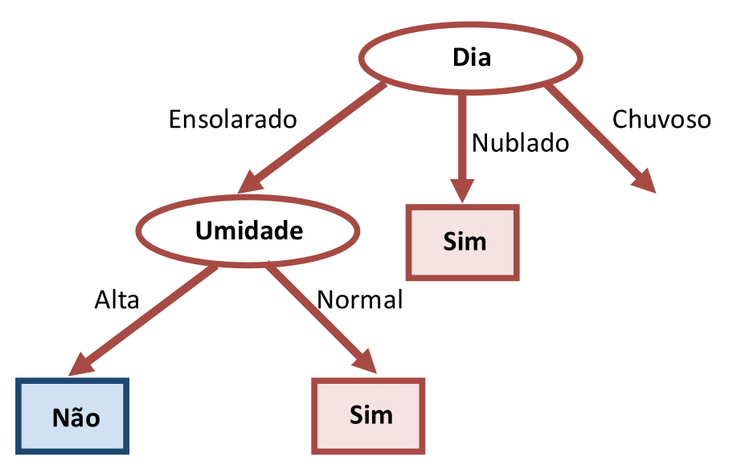
Para a terceira aresta, ou seja, “Dia=Chuvoso”, restam duas alternativas agora: “Temperatura” e “Vento”. Vamos construir as tabelas de combinação para descobrir a mais interessante. As Tabelas 3.9 e 3.10 ilustram as possíveis combinações.
| Dia | Temperatura | Partida |
|---|---|---|
| Chuvoso | Baixa | \(\textcolor{blue}{\textbf{Não}}\) |
| Chuvoso | Baixa | \(\textcolor{red}{\textbf{Sim}}\) |
| Chuvoso | Amena | \(\textcolor{red}{\textbf{Sim}}\) |
| Chuvoso | Amena | \(\textcolor{red}{\textbf{Sim}}\) |
| Chuvoso | Amena | \(\textcolor{blue}{\textbf{Não}}\) |
| Dia | Vento | Partida |
|---|---|---|
| \(\textcolor{green}{\textbf{Chuvoso}}\) | \(\textcolor{green}{\textbf{Falso}}\) | \(\textcolor{green}{\textbf{Sim}}\) |
| \(\textcolor{green}{\textbf{Chuvoso}}\) | \(\textcolor{green}{\textbf{Falso}}\) | \(\textcolor{green}{\textbf{Sim}}\) |
| \(\textcolor{green}{\textbf{Chuvoso}}\) | \(\textcolor{green}{\textbf{Falso}}\) | \(\textcolor{green}{\textbf{Sim}}\) |
| \(\textcolor{green}{\textbf{Chuvoso}}\) | \(\textcolor{green}{\textbf{Verdadeiro}}\) | \(\textcolor{green}{\textbf{Não}}\) |
| \(\textcolor{green}{\textbf{Chuvoso}}\) | \(\textcolor{green}{\textbf{Verdadeiro}}\) | \(\textcolor{green}{\textbf{Não}}\) |
Comparando as duas tabelas, nota-se que o atributo “Vento” é o mais indicado para esta iteração porque todos os elementos de “Vento=Falso” estão classificados como “Sim” e todos os elementos de “Vento=Verdadeiro” estão classificados como “Não”. Portanto estas duas arestas da Árvore de Decisão terminam com um nó folha cada. A Figura 3.5 ilustra a nova situação.
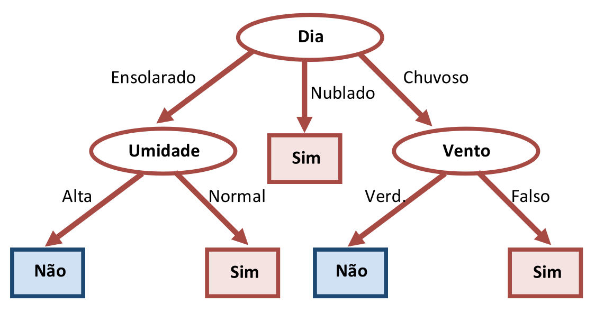
Nesta iteração o algoritmo termina, pois todos os Exemplos da tabela foram avaliados e classificados em suas respectivas classes. Porém algumas considerações podem ser feitas.
Por trás do critério de seleção de atributos aqui apresentado de forma intuitiva, há uma sólida justificativa matemática introduzida por (Quinlan, 1986), baseada na Teoria da Informação de Claude Shannon, capaz de avaliar a quantidade de informação do melhor atributo dentre os candidatos para teste em um determinado nó.
O critério de escolha do melhor atributo para cada iteração no algoritmo ID3, criado por (Quinlan, 1986), é medido pela significância estatística, que em nosso caso se expressa pela proporção de “Sim”s e “Não”s no atributo de saída “Partida”. Como foi ilustrado anteriormente, é mais promissor escolher um atributo que tenha associado a ele respostas compostas unicamente por “Sim”s ou “Não”s porque neste caso podemos colocar um nó folha correspondente e terminar com as subdivisões. Em outras palavras, quanto mais compacta uma árvore, menos testes serão necessários para classificar um Exemplo. Por outro lado, se o conjunto de respostas é composto por uma mescla de “Sim”s e “Não”s, então faz-se necessário colocar mais um nó interno, com um novo atributo sendo testado, implicando um crescimento da Árvore de Decisão.
De acordo com a fórmula de Shannon, em uma tabela como a Tabela 3.1 a quantidade de informação presente é,
\[Info(Tabela) = - \sum_{i = 1}^{N}{p_{i}\log_{2}p_{i}}\]
sendo \(p_i\) a proporção de “Sim”s e “Não”s associados a um atributo (a quantidade de informação ou entropia é medida em bits, ou frações de bits!). Por ex., na Tabela 3.1 temos apenas duas classes (“Sim” e “Não”), sendo que dos 14 Exemplos, 9 pertencem à classe “Sim” e 5 à classe “Não”. Portanto, a quantidade de informação associada a esta tabela pode ser calculada da seguinte forma,
\[\text{Info}\left( Tab.3.1 \right) = ( - 9/14\log_{2}{9/14) + ( - 5/14\log_{2}{5/14}}) = 0,94 bits\]
Uma forma alternativa de interpretar estes números, é pensar que estamos interessados em medir o grau de “impureza” de um conjunto de respostas. Se todas as respostas forem apenas “Sim” ou apenas “Não”, então o grau de impureza do conjunto é 0. Por outro lado, se tivermos \(10\%\) de “Sim”s e \(90\%\) de “Não”s, então o grau de impureza seria,
\[Info(Tab\_(10/90)) = ( - 1/10\log_{2}{1/10) + ( -}9/10\log_{2}{9/10) = 0,47 bits}\]
De acordo com este raciocínio, o grau de impureza máxima é representado pela proporção \(50\%\) de “Sim”s e \(50\%\) de “Não”s, sendo \(Info(Tab\_(50/50) = 1 bit)\).
Voltando ao nosso problema original de escolha do atributo mais promissor em cada iteração do algoritmo, vamos calcular o grau de impureza da Tabela 3.2, que se refere ao atributo “Dia”. Esse atributo se subdivide em três alternativa possíveis, com as seguintes proporções de “Sim”s e “Não”s: “Ensolarado” (2”Sim”/3”Não)“,”Nublado” (4”Sim”/0”Não) e “Chuvoso” (3”Sim”/2”Não”). Portanto, seu grau de impureza é,
\[Info(Ensolarado) = ( - 2/5\log_{2}{2/5) + ( -}3/5\log_{2}{3/5) = 0,97bits}\]
\[Info(Nublado) = ( - 4/4\log_{2}{4/4) + ( -}0/4\log_{2}{0/4) = 0,00bits}\]
\[Info(Chuvoso) = ( - 3/5\log_{2}{3/5) + ( -}2/5\log_{2}{2/5) = 0,97bits}\]
Fazendo a soma ponderada de cada uma dessas alternativas sobre os 14 Exemplos, resulta,
\[Info\left( Dia \right) = 0,97*\frac{5}{14} + 0*\frac{4}{14} + 0,97*\frac{5}{14} = \ 0,69bits\]
Aplicando-se raciocínio semelhante para os atributos “Temperatura”, “Umidade” e “Vento” obtêm-se os seguintes valores,
\[Info\left( Temperatura \right) = 0.91bits\]
\[Info\left( Umidade \right) = 0.79bits\]
\[Info\left( Vento \right) = 0.89bits\]
Portanto, dos quatro atributos possíveis na primeira iteração, o atributo “Dia” é o que tem o grau mais baixo de impureza, e , portanto, é o mais promissor para construir uma Árvore de Decisão Compacta. Continuando este procedimento recursivamente, chega-se a Árvore de Decisão apresentada na Figura 3.5.
Há mais sutilezas matemáticas envolvidas que não foram mencionadas, e outros detalhes importantes do algoritmo ID3 precisariam ser abordados se nossa intenção fosse explicar seu funcionamento. Porém, o que pretendemos aqui é apenas dar uma ideia de seu embasamento teórico para que ao nos depararmos com uma ferramenta que implemente este algoritmo seja possível entender o resultado de seus cálculos.
3.5 Árvore de Decisão Não Compacta
Para efeito comparativo, vamos supor que algum critério arbitrário de escolha da ordem dos atributos tenha sido utilizado e que o nó raiz contenha o atributo “Umidade”. A Tabela 3.11 mostra que este atributo possui Exemplos misturados pertencentes a classes distintas, portanto é necessário um novo teste, i.e., escolher um novo atributo para teste. A Figura 3.6 mostra o resultado dessa escolha arbitrária.
| Umidade | Partida |
|---|---|
| Alta | \(\textcolor{red}{\textbf{Sim}}\) |
| Alta | \(\textcolor{red}{\textbf{Sim}}\) |
| Alta | \(\textcolor{red}{\textbf{Sim}}\) |
| Alta | \(\textcolor{blue}{\textbf{Não}}\) |
| Alta | \(\textcolor{blue}{\textbf{Não}}\) |
| Alta | \(\textcolor{blue}{\textbf{Não}}\) |
| Alta | \(\textcolor{blue}{\textbf{Não}}\) |
| Normal | \(\textcolor{red}{\textbf{Sim}}\) |
| Normal | \(\textcolor{red}{\textbf{Sim}}\) |
| Normal | \(\textcolor{red}{\textbf{Sim}}\) |
| Normal | \(\textcolor{red}{\textbf{Sim}}\) |
| Normal | \(\textcolor{red}{\textbf{Sim}}\) |
| Normal | \(\textcolor{red}{\textbf{Sim}}\) |
| Normal | \(\textcolor{blue}{\textbf{Não}}\) |
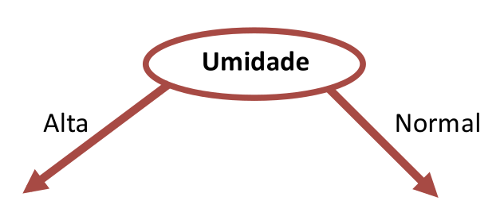
O atributo escolhido arbitrariamente agora foi “Dia” e as combinações possíveis com “Umidade” são mostradas na Tabela 3.12. A segunda iteração do algoritmo para a construção da Árvore de Decisão Alternativa é mostrada na Figura 3.7.
| Dia | Umidade | Partida |
|---|---|---|
| Ensolarado | Alta | \(\textcolor{blue}{\textbf{Não}}\) |
| Ensolarado | Alta | \(\textcolor{blue}{\textbf{Não}}\) |
| Ensolarado | Alta | \(\textcolor{blue}{\textbf{Não}}\) |
| Nublado | Alta | \(\textcolor{red}{\textbf{Sim}}\) |
| Nublado | Alta | \(\textcolor{red}{\textbf{Sim}}\) |
| Chuvoso | Alta | \(\textcolor{red}{\textbf{Sim}}\) |
| Chuvoso | Alta | \(\textcolor{blue}{\textbf{Não}}\) |
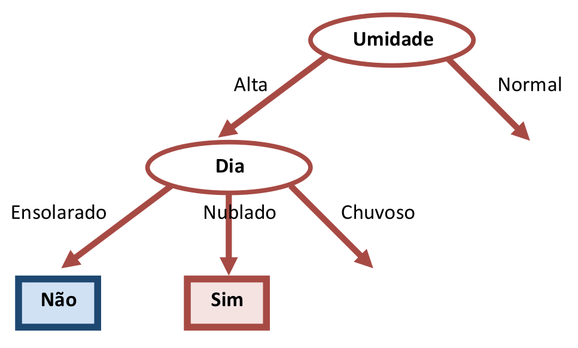
Embora as arestas de “Dia=Ensolarado” e “Dia=Nublado” terminem em nó folha, a aresta para “Dia=Chuvoso” exige um novo teste já que há duas respostas distintas possíveis. O próximo atributo escolhido arbitrariamente foi “Vento”, como mostra a Tabela 3.13. A ilustração da Figura 3.8 ajuda a entender como a falta de uma rotina de otimização produz árvores desnecessariamente grandes.
| Dia | Umidade | Vento | Partida |
|---|---|---|---|
| Chuvoso | Alta | Falso | \(\textcolor{red}{\textbf{Sim}}\) |
| Chuvoso | Alta | Verdadeiro | \(\textcolor{blue}{\textbf{Não}}\) |
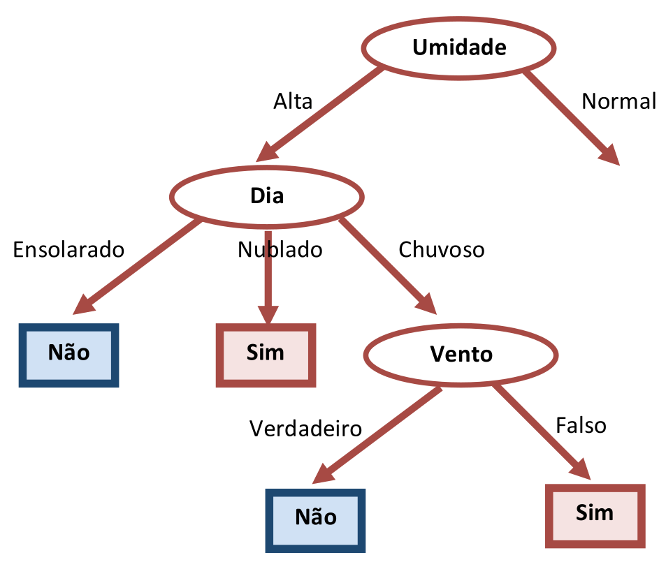
A Tabela 3.13 mostra que esta região da Árvore de Decisão está encerrada, com dois novos nós folhas. Vamos agora considerar a aresta correspondente a “Umidade=Normal” (Tabela 3.14) e supor que o novo teste escolhido será o atributo “Dia”. O resultado da escolha do atributo “Dia” para a aresta de “Umidade=Normal” é mostrado na Figura 3.9.
| Dia | Umidade | Partida |
|---|---|---|
| Ensolarado | Normal | \(\textcolor{red}{\textbf{Sim}}\) |
| Ensolarado | Normal | \(\textcolor{red}{\textbf{Sim}}\) |
| Nublado | Normal | \(\textcolor{red}{\textbf{Sim}}\) |
| Nublado | Normal | \(\textcolor{red}{\textbf{Sim}}\) |
| Chuvoso | Normal | \(\textcolor{red}{\textbf{Sim}}\) |
| Chuvoso | Normal | \(\textcolor{red}{\textbf{Sim}}\) |
| Chuvoso | Normal | \(\textcolor{blue}{\textbf{Não}}\) |
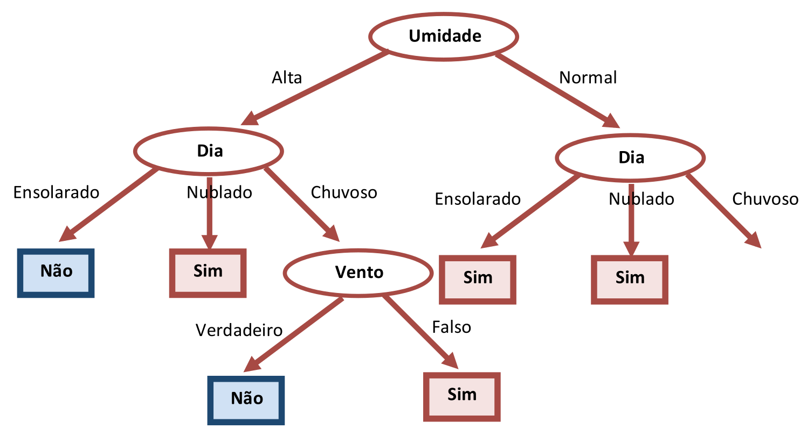
Como a opção de “Dia=Chuvoso” exige um novo teste, vamos supor que o atributo escolhido tenha sido “Vento”, produzindo o resultado mostrado na Tabela 3.15. O resultado final da Árvore de Decisão Não-Compacta é mostrado na Figura 3.10.
| Dia | Umidade | Vento | Partida |
|---|---|---|---|
| Chuvoso | Normal | Falso | \(\textcolor{red}{\textbf{Sim}}\) |
| Chuvoso | Normal | Falso | \(\textcolor{red}{\textbf{Sim}}\) |
| Chuvoso | Normal | Verdadeiro | \(\textcolor{blue}{\textbf{Não}}\) |
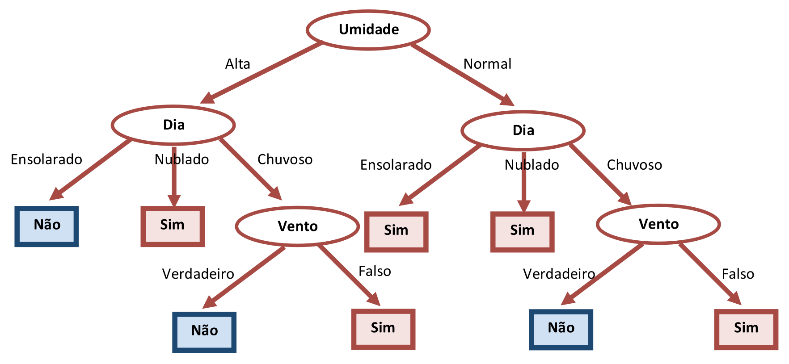
Com este teste, o algoritmo se encerra já que todos os Exemplos foram devidamente considerados e se encaixaram num dos caminhos possíveis da Árvore de Decisão.
Tanto a árvore da Figura 3.5 quanto a da Figura 3.10 classificam corretamente todos os Exemplos da Tabela do Tempo representada pela Tabela 3.1. Mas, como a Tabela 3.5 é mais compacta, ela deve ser preferida.
3.6 Árvores de Decisão Usadas para Modelagem Descritiva
Comparando-se as Árvores de Decisão das Figura 3.5 e Figura 3.10, percebe-se que em nenhuma das duas aparece o atributo “Temperatura” e, no entanto, ambas classificam corretamente todos os Exemplos. Considerando que essas Árvores de Decisão representam as relações relevantes entre os valores dos atributos e os respectivos rótulos de classe, isso significa que “Temperatura” não é essencial para a determinação de classe do atributo de saída “Partida”. O conjunto de Exemplos da Tabela do Tempo mostra que a combinação dos outros atributos é que determina se vai ou não haver uma partida, independentemente da “Temperatura” (porque possivelmente a partida se dará em ambiente fechado).
Ao fazer este tipo de análise para explicar um padrão de relacionamento entre atributos, estamos usando uma Árvore de Decisão como um modelo descritivo, e não preditivo. Isso ilustra outra aplicação interessante das Árvores de Decisão na qual o objetivo é adquirir um melhor entendimento sobre os dados coletados e, dessa forma, formular hipóteses explicativas para um fenômeno em estudo.
Considere, por exemplo, a pesquisa sobre determinada doença, para a qual foram coletados dados médicos de pacientes portadores ou não dessa doença. A descoberta de quais fatores podem desencadeá-la, e de quais fatores são irrelevantes, é da maior importância para a pesquisa médica. Em outras áreas, a modelagem descritiva pode ser igualmente interessante. Pense, por exemplo, na importância em entender o comportamento dos frequentadores de determinado estabelecimento comercial, ou no aumento de lucro que alguém pode obter ao traçar o perfil de consumo de um segmento social.
3.7 Regras de Classificação a partir de uma Árvore de Decisão
A geração de Regras de Classificação a partir de uma Árvore de Decisão é feita percorrendo desde o nó raiz até um nó folha, anotando a conjunção de condições representadas pelos nós internos. A cada classe da Árvore de Decisão corresponde uma Regra de Classificação, sendo ambas logicamente equivalentes.
Vamos reproduzir a Árvore de Decisão da Figura 3.5 para ilustrar esse processo de geração de Regras de Classificação a partir de uma Árvore de Decisão.
Partindo-se do nó raiz “Dia”, seguindo pela aresta correspondente à condição “Ensolarado”, passando pelo nó interno “Umidade” e, finalmente, tomando a aresta “Alta”, chega-se ao nó folha “Não”. Dessa forma, podemos gerar a primeira regra relativa à classe “Não”, como ilustra a Regra 3.1:
\[\textcolor{red}{\textbf{If }} (\text{Dia} = \text{Ensolarado}) \textcolor{red}{\textbf{ and }} (\text{Umidade} = \text{Alta}) \textcolor{red}{\textbf{ then }} \\ (\text{Partida} = \text{Não}) \tag{3.1}\]
Esta regra foi construída como uma conjunção lógica (“AND”) de duas condições lógicas. Por inspeção na Árvore de Decisão da Figura 3.5 verifica-se que há outro caminho que pode levar à classe “Não”, que pode ser representada pela Regra 3.2:
\[ \textcolor{red}{\textbf{If }} (\text{Dia} = \text{Chuvoso}) \textcolor{red}{\textbf{ and }} (\text{Vento} = \text{Verdadeiro}) \\ \textcolor{red}{\textbf{ then }} (\text{Partida} = \text{Não}) \tag{3.2}\]
As duas Regras [-@-eq3-1] e 3.2, formadas por conjunções (“AND”), podem ser fundidas numa única regra utilizando-se uma disjunção lógica (“OR”), como mostra a Regra 3.3:
\[\begin{gathered} \textcolor{red}{\textbf{If }} [(\text{Dia} = \text{Ensolarado}) \textcolor{red}{\textbf{ and }} (\text{Umidade} = \text{Alta})] \\ \textcolor{red}{\textbf{ or }} [(\text{Dia} = \text{Chuvoso}) \textcolor{red}{\textbf{ and }} (\text{Vento} = \text{Verdadeiro})] \\ \textcolor{red}{\textbf{ then }} (\text{Partida} = \text{Não}) \end{gathered} \tag{3.3}\]
Regras com estrutura lógica semelhante à Regra 3.3 são conhecidas como regras na forma disjunção de conjunções. Aplicando-se o mesmo procedimento descrito para os casos restantes, obtém-se a Regra de Classificação correspondente à classe “Sim”, representada pela Regra 3.4:
\[ \begin{gathered} \textcolor{red}{\textbf{If }} [(\text{Dia} = \text{Ensolarado}) \textcolor{red}{\textbf{ and }} (\text{Umidade} = \text{Normal})] \ \textcolor{red}{\textbf{ or }} [(\text{Dia} = \text{Nublado})] \\ \textcolor{red}{\textbf{ or }} [(\text{Dia} = \text{Chuvoso}) \textcolor{red}{\textbf{ and }} (\text{Vento} = \text{Falso})] \\ \textcolor{red}{\textbf{ then }} (\text{Partida} = \text{Sim}) \end{gathered} \tag{3.4}\]
3.8 Treinamento, Aprendizado e Classificação
Recapitulando o que foi feito até aqui, inicialmente consideramos a existência de uma Base de Dados codificada na forma de uma tabela com vários atributos. A seguir, apresentamos um algoritmo capaz de construir uma Árvore de Decisão a partir desses dados estruturados. Como cada Exemplo da Base de Dados era composto por alguns atributos e um rótulo de classe (ou atributo de saída), nós podemos entender todo este processo de construção de Árvores de Decisão como sendo um processo de Aprendizado Supervisionado por meio de Treinamento.
Diz-se que o Aprendizado é Supervisionado quando cada Exemplo usado no Treinamento possui um rótulo de classe que orienta (ou otimiza) um mecanismo de reforço ou penalização, ou seja, quando já se sabe antecipadamente a qual classe determinado elemento pertence. Muitas vezes os Exemplos não trazem o rótulo de classe e ainda assim é possível ocorrer aprendizado, porém, nestes casos diz-se que o Aprendizado é Não-Supervisionado. Por ex., com um conjunto de Exemplos sem rótulos de classe é possível agrupá-los de acordo com algum critério, como o critério de afinidade.
A Árvore de Decisão resultante representa o Modelo gerado ou o Conceito aprendido. Note que para cada Base de Dados será construída uma Árvore de Decisão que lhe corresponde. Ou seja, nós temos um algoritmo que em princípio gera árvores genéricas, que refletem a estrutura dos dados utilizados no treinamento. Como a Árvore de Decisão gerada poderá ser usada para diagnosticar doenças, classificar produtos comerciais, ou explicar a correlação de fatores de um fenômeno, podemos dizer que o Sistema Inteligente que emprega este tipo de algoritmo de aprendizado melhora seu desempenho a partir de sua própria experiência (ou treinamento). A Figura 3.11 ilustra as três fases de um Sistema Inteligente Classificatório.
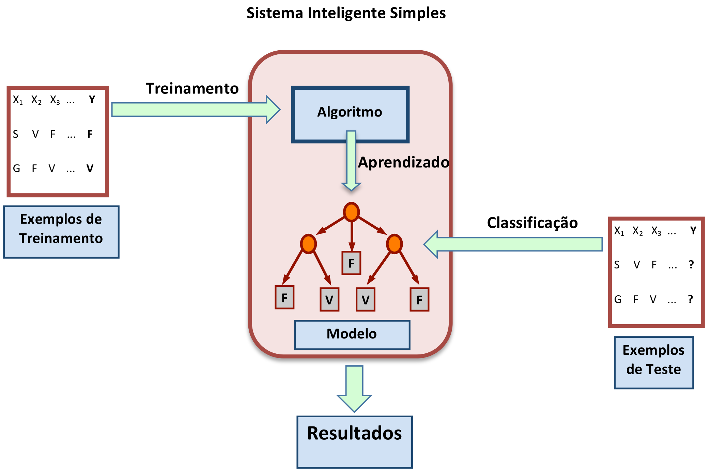
O Treinamento viabiliza o Aprendizado de um Conceito pelo Sistema Inteligente, e a aquisição de um Conceito pelo sistema elimina a necessidade de um aprendizado constante. O processo de Aprendizado pode ser demorado, mas uma vez aprendido um Conceito, o processo de Classificação é bem mais rápido. A Figura 3.11 não mostra outros caminhos ou fluxos de trabalho do sistema para a obtenção do Modelo desejado de Árvore de Decisão. É comum que após a geração do primeiro modelo de árvore, os resultados obtidos não sejam satisfatórios. Nesse caso, nova rodada de treinamento se inicia, com novos parâmetros e ajustes adicionais, até a geração de um segundo modelo. Este processo se repete de forma iterativa e interativa até que se chegue a uma Árvore de Decisão com as características buscadas.
Tendo descrito o processo de criação ou indução de uma Árvore de Decisão, vamos ver agora que resultados de classificação podemos obter com esta árvore. A Tabela 3.16 apresenta alguns novos Exemplos que usaremos para teste.
| Dia | Temperatura | Umidade | Vento | Partida |
|---|---|---|---|---|
| Ensolarado | Elevada | Alta | Falso | \(\textcolor{blue}{\textbf{Não}}\) |
| Ensolarado | Elevada | Alta | Verdadeiro | \(\textcolor{blue}{\textbf{Não}}\) |
| Nublado | Elevada | Alta | Falso | \(\textcolor{red}{\textbf{Sim}}\) |
| Chuvoso | Amena | Alta | Falso | \(\textcolor{red}{\textbf{Sim}}\) |
| Chuvoso | Baixa | Normal | Falso | \(\textcolor{red}{\textbf{Sim}}\) |
| Chuvoso | Baixa | Normal | Verdadeiro | \(\textcolor{blue}{\textbf{Não}}\) |
| Nublado | Baixa | Normal | Verdadeiro | \(\textcolor{red}{\textbf{Sim}}\) |
| Ensolarado | Amena | Alta | Falso | \(\textcolor{blue}{\textbf{Não}}\) |
| Ensolarado | Baixa | Normal | Falso | \(\textcolor{red}{\textbf{Sim}}\) |
| Chuvoso | Amena | Normal | Falso | \(\textcolor{red}{\textbf{Sim}}\) |
| Ensolarado | Amena | Normal | Verdadeiro | \(\textcolor{red}{\textbf{Sim}}\) |
| Nublado | Amena | Alta | Verdadeiro | \(\textcolor{red}{\textbf{Sim}}\) |
| Nublado | Elevada | Normal | Falso | \(\textcolor{red}{\textbf{Sim}}\) |
| Chuvoso | Amena | Alta | Verdadeiro | \(\textcolor{blue}{\textbf{Não}}\) |
| \(\textcolor{green}{\text{Ensolarado}}\) | \(\textcolor{green}{\text{Amena}}\) | \(\textcolor{green}{\text{Normal}}\) | \(\textcolor{green}{\text{Falso}}\) | \(\textcolor{green}{\textbf{????}}\) |
| \(\textcolor{green}{\text{Ensolarado}}\) | \(\textcolor{green}{\text{Baixa}}\) | \(\textcolor{green}{\text{Alta}}\) | \(\textcolor{green}{\text{Verdadeiro}}\) | \(\textcolor{green}{\textbf{????}}\) |
| \(\textcolor{green}{\text{Nublado}}\) | \(\textcolor{green}{\text{Baixa}}\) | \(\textcolor{green}{\text{Alta}}\) | \(\textcolor{green}{\text{Verdadeiro}}\) | \(\textcolor{green}{\textbf{????}}\) |
| \(\textcolor{green}{\text{Chuvoso}}\) | \(\textcolor{green}{\text{Elevada}}\) | \(\textcolor{green}{\text{Normal}}\) | \(\textcolor{green}{\text{Falso}}\) | \(\textcolor{green}{\textbf{????}}\) |
Usando tanto a Árvore de Decisão da Figura 3.5 quanto a da Figura 3.10, o resultado para o primeiro Exemplo de Teste, aquele que se inicia com “Dia=Ensolarado” e “Temperatura=Amena”, é “Sim”, para o segundo Exemplo, com “Dia=Ensolarado” e “Temperatura=Baixa” , a resposta é “Não”, para o terceiro Exemplo “Dia=Nublado”, a resposta é “Sim” e finalmente para o quarto Exemplo, com “Dia=Chuvoso”, a resposta é “Sim”.
3.9 Overfitting e Poda
É possível que para alguns Exemplos de Teste os resultados produzidos por Árvores de Decisão compactas, como a da Figura 3.5, não sejam os mesmos de Árvores de Decisão não-compactas, como a da Figura 3.10, muito embora os resultados para todos os Exemplos de Treinamento tenham sido os mesmos. O que pode ocorrer com árvores não compactas é que algumas das arestas refletem um superajuste (overfitting) aos Exemplos de Treinamento. Se neste Conjunto de Treinamento houver ruído ou outliers, a estrutura resultante da Árvore de Decisão pode não refletir às relações essenciais entre os atributos da Base de Dados.
Para evitar o overfitting, muitos algoritmos se valem de uma técnica conhecida como “Poda”, que consiste em eliminar algumas arestas da Árvore de Decisão com base em medidas estatísticas dos Exemplos. A Poda pode ocorrer sobre uma Árvore de Decisão concluída, com a eliminação de algumas arestas consideradas não necessárias, ou durante a construção da Árvore de Decisão, com a introdução precoce de um nó folha em arestas com baixa importância estatística, por exemplo.
A Árvore de Decisão da Figura 3.10 poderia ter algumas de suas arestas removidas sem comprometer seriamente a taxa de erros na classificação. De fato, observando-se a Tabela 3.4, verifica-se que dos sete Exemplos que apresentam “Umidade=Normal”, seis deles têm rótulo de classe “Sim”. Por esta razão, o nó interno à direita da Figura 3.10, (reproduzida na Figura 3.12 (a)), representando o atributo “Vento”, poderia ser eliminado e substituído por um nó folha “Sim” já que a maioria dos Exemplos que chegam a este nó apresentam o rótulo de classe “Sim”. A seguir, o nó interno “Dia” também pode ser eliminado pois todas seus nós terminais passaram a ser do tipo “Sim”. A Figura 3.12 (b) mostra o resultado desse processo de Poda.
Para avaliar quantitativamente o desempenho de um modelo gerado, seja ele uma Árvore de Decisão ou um conjunto de Regras de Classificação, veremos que há técnicas e medidas de desempenho especialmente desenvolvidas para este fim.
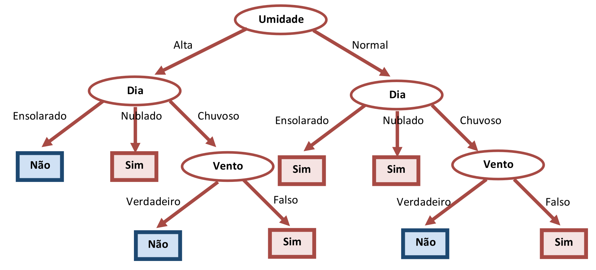
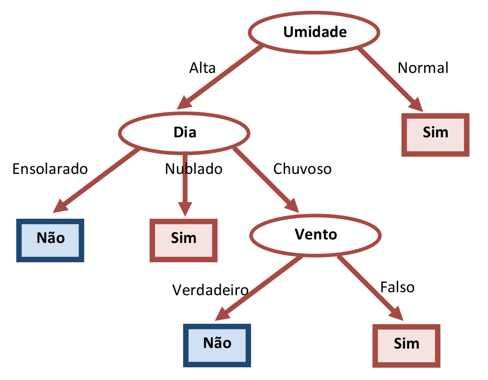
3.10 Matriz de Confusão e Avaliação dos Resultados
Ao se gerar uma Árvore de Decisão o que se espera é que ela classifique corretamente Exemplos desconhecidos, mas na prática às vezes verifica-se a ocorrência de classificações equivocadas. Isso também ocorre com o diagnóstico de profissionais especializados. Quando um especialista deseja detectar a presença ou não de uma doença, ele solicita exames laboratoriais para auxiliá-lo a formular um diagnóstico positivo ou negativo sobre esta provável doença.
Se as respostas possíveis para um diagnóstico forem “Positivo” e “Negativo”, quatro combinações de resultados previstos e resultados reais podem ocorrer:
- Se o paciente for portador da doença e o médico acertar no diagnóstico, dizemos que este caso é um Verdadeiro Positivo (VP);
- Se o paciente não for portador da doença e o médico acertar no diagnóstico, dizemos que este caso é um Verdadeiro Negativo (VN);
- Se o paciente for portador da doença, e o médico errar no diagnóstico afirmando que ele está são, dizemos que este caso é um Falso Negativo (FN);
- Se o paciente não for portador da doença, e o médico errar no diagnóstico dizendo que ele está doente, dizemos que este caso é um Falso Positivo (FP).
Essas quatro combinações de resultados costumam ser representadas por uma matriz que recebe o nome de “Matriz de Confusão”, como mostra a Tabela 3.17.
| Positivo Previsto | Negativo Previsto | |
|---|---|---|
| Positivo Real | Verdadeiro Positivo (VP) | Falso Negativo (FN) |
| Negativo Real | Falso Positivo (FP) | Verdadeiro Negativo (VN) |
Os valores contidos numa Matriz de Confusão podem ser utilizados para avaliar o desempenho de uma Árvore de Decisão. O que se espera nos resultados é que os casos positivos sejam classificados como positivos e os negativos como negativos, ou seja, o desejável é que as taxas de sucesso para Verdadeiro Positivo e Verdadeiro Negativo sejam altas, e que as taxas de Falso Positivo e Falso Negativo sejam baixas.
Fazendo uma relação entre os Exemplos corretamente classificados, i.e., Verdadeiro Positivo (VP) mais Verdadeiro Negativo (VN), com o número total de classificações (VP+VN+FP+FN), podemos definir uma métrica de desempenho para a taxa de acertos ou sucesso, conhecida como Precisão ou Acurácia de uma Árvore de Decisão. Portanto,
\[Acurácia = \frac{VP + VN}{VP + VN + FP + FN} \times 100\%\]
3.11 Como Gerar uma Árvore de Decisão Usando o Weka
A ferramenta Weka (Weka, 2013) permite gerar Árvores de Decisão de forma automática ou interativa. Vamos mostrar a geração automática a partir de um arquivo de entrada.
Passo 1 - Uma forma rápida de criar o arquivo de entrada tipo “.arff” a partir de uma planilha de dados “.xls” (Figura 3.13 (a)) é salvá-la no formato “.csv” (Figura 3.13 (b)), depois abrir este arquivo num editor de texto, acrescentar algumas palavras-chave e salvar novamente (Figura 3.14 (a)). Saia do editor de texto e mude manualmente a extensão do arquivo de “.csv” para “.arff” (Figura 3.14 (b)). Note que as Figuras 3.14 (a) e 3.14 (b) são idênticas, mas a extensão dos arquivos é diferente.
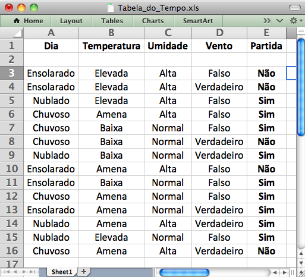
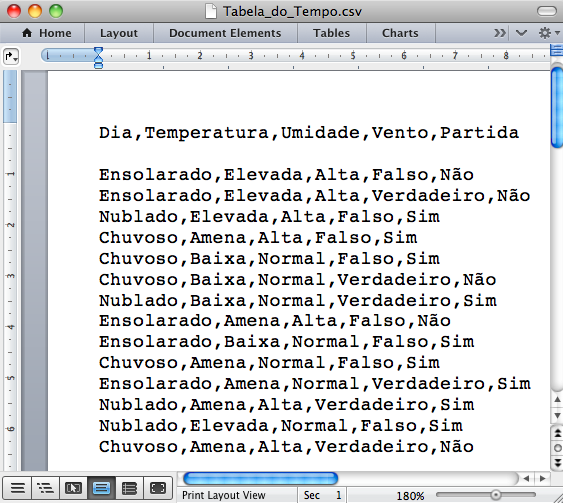
Na unidade anterior, sobre como gerar Regras de Associação no Weka, foi explicado que o Weka aceita trabalhar diretamente o formato “.csv”, sem a necessidade de acrescentar palavras-chaves. Mas, em alguns casos a criação do arquivo “.arff” se justifica. Em caso de dúvida sobre esta questão, consulte o material da unidade anterior.
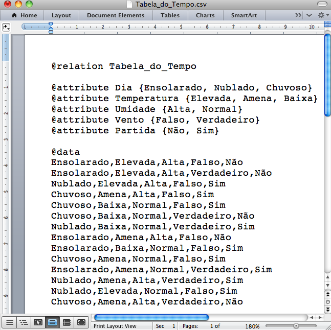
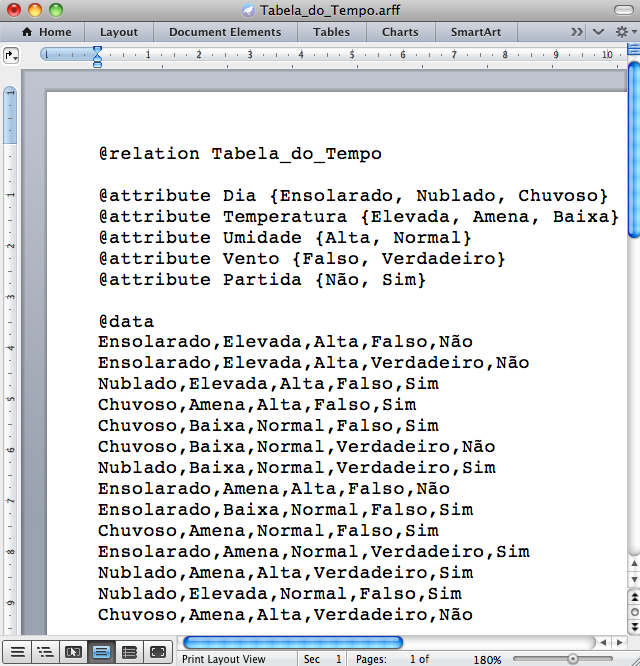
Passo 2 - Dando dois cliques sobre o ícone do arquivo “Tabela_do_Tempo.arff” ele se abrirá dentro do Weka, mostrando uma figura semelhante à Figura 3.15. Alternativamente, é possível primeiramente abrir o Weka Explorer, depois “Open file…” e localizar o arquivo “Tabela_do_Tempo.arff”.
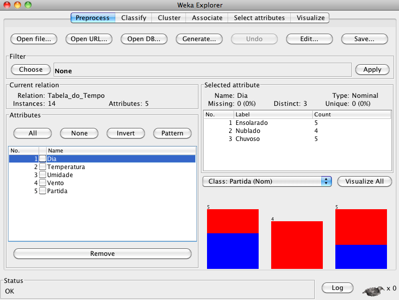
Note que na seção “Attributes” aparecem os cinco atributos da Tabela do Tempo na ordem em que foram declarados. Na Figura 3.15 aparecem ainda os detalhes da composição de um dos atributos selecionados, neste caso “Dia”, mas qualquer um dos quatro atributos restantes pode ser selecionado.
Passo 3 – Com o arquivo “Tabela_do_Tempo.arff” aberto, clique na aba “Classify”, localizada da parte superior esquerda da janela do Weka Explorer. A seguir, clique em “Choose” para escolher o algoritmo de classificação. Primeiro clique em “trees”, depois em “J48” (Figura 3.16 (a) e Figura 3.16 (b) ). O algoritmo “J48” é uma implementação mais recente do “ID3” e, além disso, tem também a vantagem de permitir, dentro do Weka, visualizar a Árvore de Decisão construída.
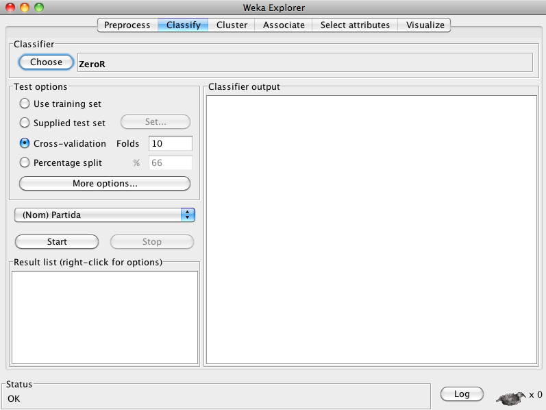
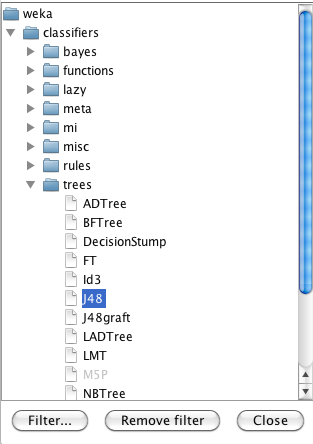
Uma vez escolhido o algoritmo “J48” é possível conferir e alterar alguns parâmetros. Clicando com o botão esquerdo do mouse sobre “J48” abre-se um menu com todos os valores default. Inicialmente vamos trabalhar com estes valores.
Passo 4 – Ainda dentro da aba “Classify”, em “Test options” escolha “Use training set” e clique no botão “Start”, um pouco abaixo. A opção “Use training set” significa que o mesmo Conjunto de Treinamento usado para gerar a Árvore de Decisão será usado para testar os resultados (veja Figura 3.17). Se o Conjunto de Exemplos da Base de Dados não for inconsistente, geralmente a taxa de acerto com esta opção deve ser de 100%. Mais adiante, na próxima unidade de estudo, veremos que há outras formas mais interessantes de testar a robustez e a qualidade do Modelo gerado.
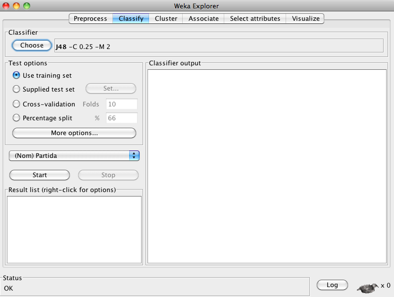
Passo 5 – Ao disparar o processo de treinamento com o algoritmo “J48” aparecem na região direita da tela (“Classifier output”) os resultados desejados (Figura 3.18). A Árvore de Decisão aparece na forma textual, mas pode ser vista na forma gráfica. Na parte inferior da tela, aparecem o número e a porcentagem de exemplos classificados corretamente, a Acurácia (ou Precisão) por Classe e a Matriz de Confusão.
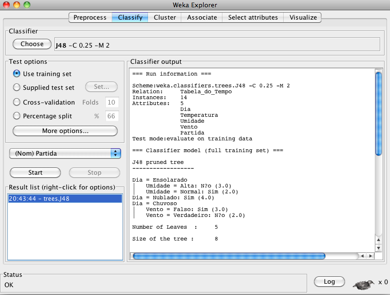
Se você tiver interesse em saber como cada uma dos exemplos foi classificado, clique na aba “More options...” e depois habilite “Output predictions”. Clique em “Start” novamente.
Passo 6 – Clicando com o botão direito do mouse na região inferior esquerda, onde se lê “Result list (right-click for options)”, mais precisamente sobre a faixa azul “trees.J48”, é possível visualizar graficamente o resultado, escolhendo “Visualize tree” (Figura 3.19).
Os números entre parênteses em cada nó folha da Figura 3.19 indicam quantos exemplos chegaram até esta folha. Somando-se estes números, verifica-se que 14 exemplos foram testados nesta simulação.
Passo 7 – Se você quiser saber exatamente quais Exemplos foram classificados em quais classes, primeiramente abra o arquivo “Tabela_do_Tempo.arff” no editor do Weka, que pode ser acessado pelo seguinte caminho: interface “Weka GUI Chooser”, depois “Tools”, e depois “ArffViewer” (Figura 3.20).
Quando a janela “ARFF-Viewer” se abrir, localize o arquivo “Tabela_do_Tempo.arff” clicando primeiramente em “File” e depois em “Open...”.
Com o editor do Weka aberto, clique no atributo “Umidade”, ou qualquer outro atributo, para ordenar os Exemplos de acordo com os valores que este atributo pode assumir.
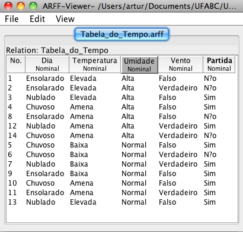
Note que com este editor, é possível alterar os valores dos atributos, clicando sobre o campo a ser alterado.
Obs.: O editor do Weka também pode ser acessado no “Weka Explorer”, escolhendo a aba “Preprocess” e depois “Edit...”.
Passo 8 – Para testar novos Exemplos no Classificador sem sair da interface “Weka Explorer”, há a opção “Supplied test set”. Vamos supor que os quatro novos Exemplos da Tabela 3.16 de nosso material de Teoria devam ser testados no “Weka Explorer”.
Primeiramente crie um arquivo “.arff” com os quatro Exemplos extras da Tabela 3.16 (basta abrir o arquivo “Tabela_do_Tempo.arff” no editor do Weka, fazer as modificações e salvar com um novo nome, digamos “Teste.arff”).
Carregue no “Weka Explorer” o Conjunto de Treinamento “Tabela_do_Tempo.arff” da forma usual, i.e., clicando no “Preprocess” da barra superior e depois em “Open file...”. A seguir clique em “Classify”, escolha em “Choose” o algoritmo desejado, digamos “J48”, e em “Test options” escolha “Supplied test set”. Pressionando a tecla “Set”, aparece a opção “Open file...” com a qual é possível carregar o Conjunto de Teste “Teste.arff”.
Em “More options” habilite a opção “Output predictions” e dispare o programa com a opção “Start”. Na seção “Classifier output”, devem aparecer as quatro predições buscadas.
3.12 Considerações Finais
A geração de Árvores de Decisão normalmente é comparativamente mais rápida que outros métodos de classificação. Árvores de Decisão pequenas são fáceis de entender e Árvores grandes podem ser convertidas em Regras de Classificação. Geralmente a taxa de acerto de classificação de Exemplos de Teste, ou seja, a Acurácia das Árvores de Decisão, é compatível com outros métodos equivalentes, ou um pouco abaixo de métodos mais complexos. Porém, em Aprendizado de Máquina raramente se encontra um método com desempenho superior que seus pares para qualquer conjunto de dados.
Não foram estudados aqui casos reais de inconsistências, ausência de dados ou exceções na Base de Dados, para citar apenas alguns dos possíveis problemas. Suponha que durante a indução da Árvore de Decisão dois Exemplos ligeiramente distintos, mas que percorrem o mesmo caminho, pertençam a classes distintas! Neste caso, verifica-se que há inconsistência nos dados e uma análise pontual deverá determinar e eliminar o problema. Considere casos reais de Exemplos ausentes representados por caminhos logicamente possíveis, como um dos valores possíveis que determinado atributo pode assumir, mas que não estão presentes na Base de Dados. Que classe atribuir a estes casos? Algum critério deverá ser adotado para estes casos, como o de atribuir o valor da classe estatisticamente predominante no conjunto de Exemplos.
Além dessas situações, há os casos de dados espúrios causados por coleta equivocada, mas com valores lógicos perfeitamente dentro das possibilidades aceitas para cada atributo, e que não terão sido detectados na fase inicial de limpeza de dados porque a natureza desses problemas é de incompatibilidade com o modelo gerado ou o conceito aprendido. O tratamento de problemas desta natureza foge ao escopo desta primeira abordagem à geração ou indução de Árvores de Decisão, mas tais problemas podem ser estudados na referência bibliográfica fornecida na parte final deste material.
3.13 Lista de Exercícios
1. (20%) Explique com suas próprias palavras a seguinte afirmação: numa Árvore de Decisão, os nós testam Atributos.
2. (30%) Explique com suas próprias palavras, o que é “superajuste” ou “overfitting”, seus efeitos e dê um exemplo.
3. Carregue o arquivo “iris.arff” (anexo) no Weka e elimine os atributos “sepalwidth” (largura da sépala) e “sepallength” (comprimento da sépala). Para fazer esta operação, basta selecionar estes dois atributos no “Weka Explorer” e depois clicar em “Remove”. Devem sobrar apenas três atributos: “petallength” (comprimento da pétala), “petalwidth” (largura da pétala) e “class” (classe), com 150 Exemplos, divididos entre “Iris-setosa”, “Iris-versicolor” e “Iris-virginica”.
(a) (30%) – Gere a Árvore de Decisão com o algoritmo “J4.8”, analise a representação gráfica da árvore e explique por que esta Árvore de Decisão deve cometer menos erros de classificação que a Árvore de Decisão da Figura 3.2, de nosso material didático.
(b) (20%) – No “Weka Explorer”, vá em “Visualize”, ajuste “PlotSize” e “PointSize”, clique em “Update” e escolha a representação com os atributos “petalwidth” e “petallength”. Analise esta figura (que deve se parecer à Figura 3.1 de nosso material didático).
3.14 Referências do Capítulo
Este capítulo baseou-se em obras clássicas e manuais técnicos que definem o estado da arte em ciência de dados. A fundamentação teórica sobre a indução de árvores de decisão seguiu o trabalho seminal de Quinlan (1986), complementado pelas metodologias de mineração e descoberta de conhecimento exploradas em Han; Kamber (2008) e Tan; Steinbach; Kumar (2009). As implementações práticas e o uso da ferramenta Weka fundamentam-se em Witten; Frank (2005) e Frank; Hall; Witten (2016). Para a contextualização no cenário de sistemas inteligentes e análise de dados, foram consultadas as obras de Rezende (2005), Pinheiro (2008) e Rocha; Cortez; Neves (2008). Por fim, o conjunto de dados histórico utilizado em diversos exemplos práticos remete ao estudo de Fisher (1936).